- ALPS THEME DEMO HOME PAGE
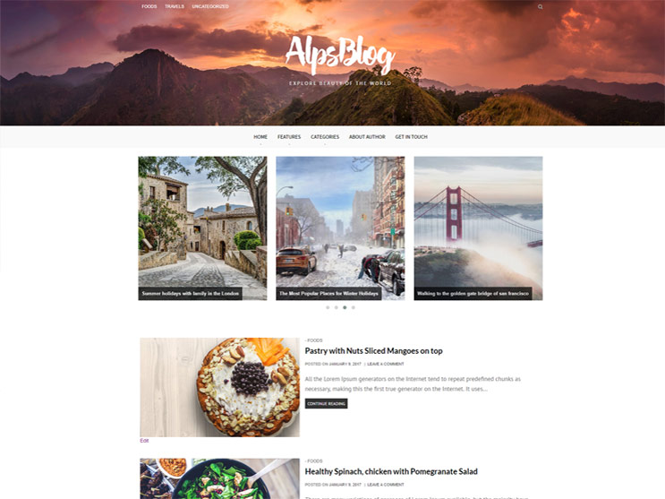
Thank you for purchasing our theme!
We at AlpsDesign are confident that you'll be delighted with AlpsBlog vast feature options and clean design.
Please reference this file for any questions or issues you may be experiencing-- it's likely you'll find the answer to your query here.
Should you have any questions that are beyond the scope of this help file, please feel more than free to email us via our profile page at http://themeforest.net/user/alpsdesign.
We'll do our very best to reply as promptly as possible.
Interested in keeping up to date with AlpsDesign future projects and releases? Get in touch with us at info@alpsdesigns.com
Thanks so much!
Extract the zipped package downloaded from ThemeForest to your desktop. In the extracted package you will find alpsblog.zip which is the WordPress theme file.
You can install the theme one of two ways:
FTP Extract the alpsblog.zip file and upload the extracted folder to the /wp-content/themes/ folder on your server.
WordPress Navigate to Apperance > Add New Themes > Upload page. Select the alpsblog.zip file.
Press the Install Now button to upload and install the theme.
After uploading the theme, you must activate it. Navigate to the Appearence > Themes page to activate the theme.
- TO INSTALL THEME UNZIP FOLDER AND GET INSIDE THEME FILES FOLDER YOU WILL FIND ALPSTHEME.ZIP FILE
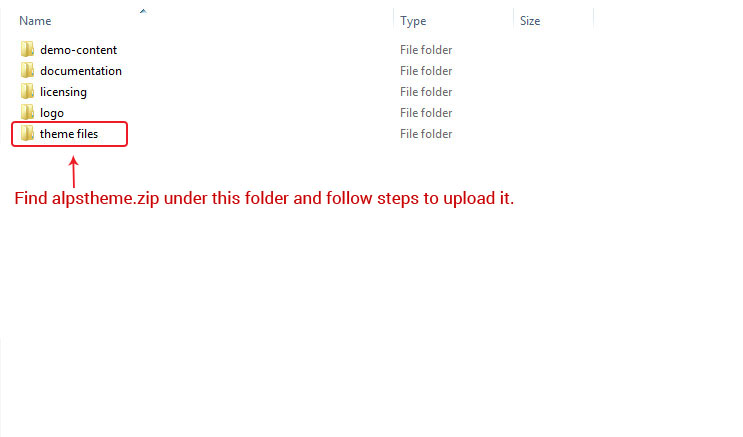
- CLICK ON APPEARANCE -> THEME -> ADD NEW THEME
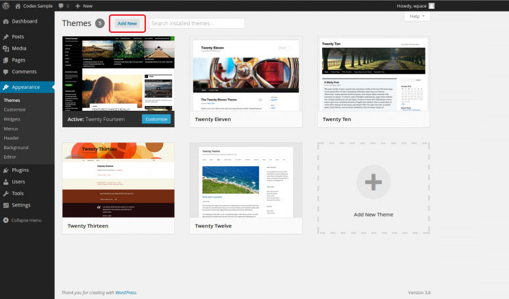
- CLICK ON CHOOSE FILES AND PROVIDE ALPSTHEME.ZIP THAT YOU WILL FIND IN THE PACKAGE FOLDER.
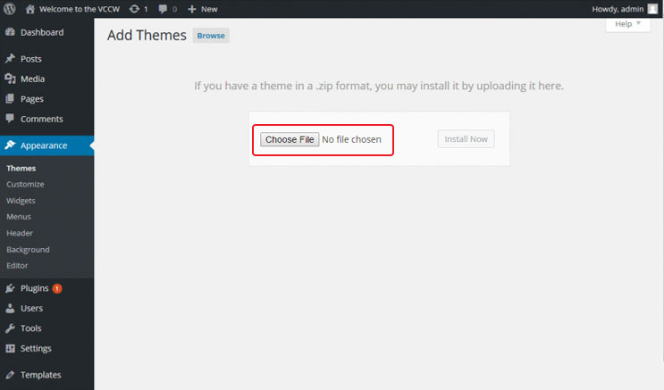
AFTER INSTALL THEME JUST CLICK ON ACTIVE TO ACTIVATE ALPSBLOG THEME.
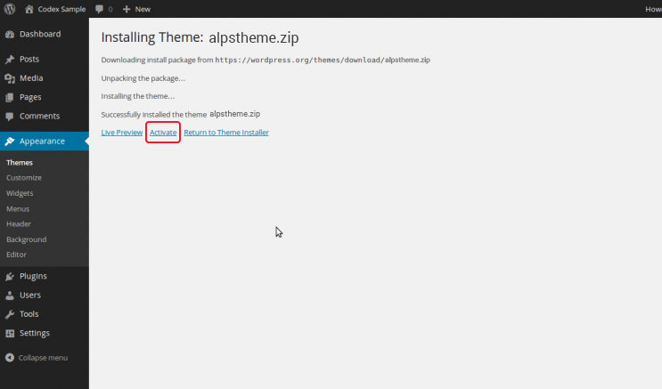
Extract the zipped package downloaded from ThemeForest to your desktop. In the extracted package you will find a folder demo-content which is the Demo content XML file to import. .
Now go to wp-admin panel -> Appereance -> Import Demo Data
XML file Now you have xml file so select Choose XML file option and import data.
Import ListIt will import list of Post, Pages, Menu, Other Required data and Images.
- TO CREATE DEMO VERSION JUST ACTIVATE THEME AND FOLLOW STEPS BELOW.
- INSTALL ALL REQUIRED PLUGINS AFTER ACTIVE THEME
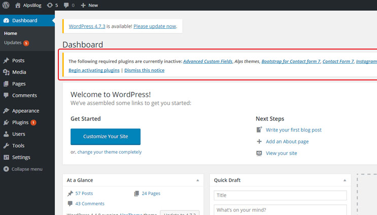
- FIND ALPSBLOG-CONTENT.XML IN THE PACKAGE ZIP IN THE DEMO-CONTENT FOLDER
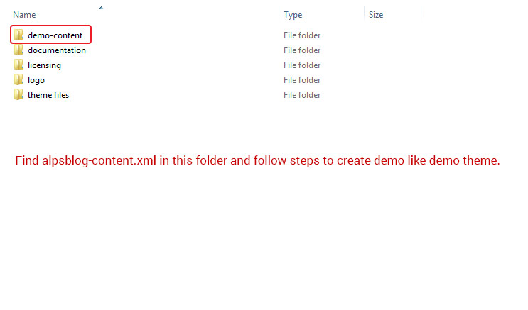
- AFTER ACTIVE PLUGINS GO TO APPERANCE -> IMPORT DEMO DATA AND CLICK TO CHOOSE FILE
- AFTER CLICK ON CHOOSE BUTTON PROVIDE ALPSBLOG-CONTENT.XML DEMO-CONTENT FILE.
- CLICK ON IMPORT DEMO CONTENT AND WAIT TILL ITS COMPLETE IMPORT ALL DATA
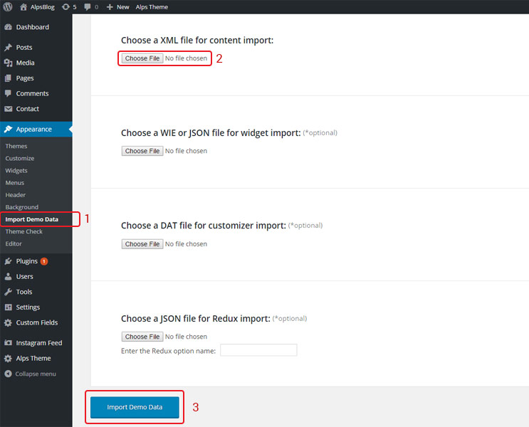
- AFTER IMPORT ALL DATA GO TO ALPS THEME -> GENERAL
- SELECT LIST VIEW AS SHOW IN THE PICTURE POINT 2
- SELECT SLIDER OPTIONS AS TRIPLE ITEMS AS IN THE PICTURE BELOW POINT 3
- KEEP SIDEBAR VIEW OFF TO HIDE SIDEBAR AS IN THE DEMO CONTENT
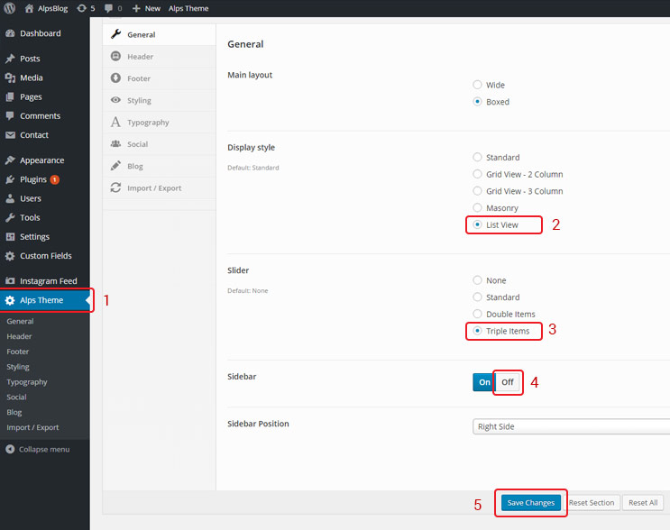
- AFTER SAVE CHANGES JUST GO TO HOME PAGE AND YOU WILL FIND HOME PAGE AS IN THE DEMO.
Alpsblog supports one locations for custom WordPress menu - the Primary Menu:
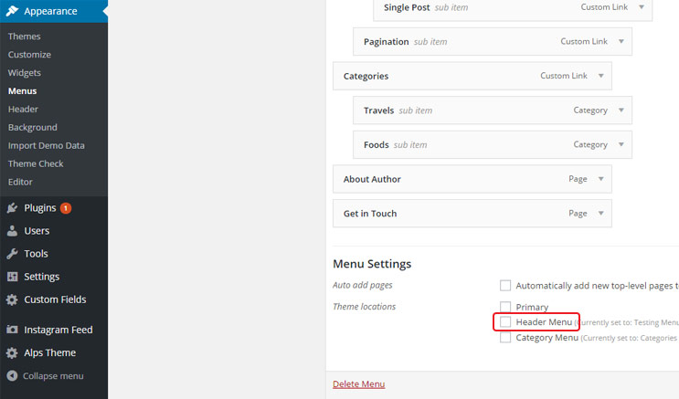
For menu setup, navigate to the Appearance > Menus page. Enter a name for your menu and add links to the menu by using the options given on the left sidebar. You can manage your menus using the drag and drop functionality.
After setting up your menu, select the menu you just created from the theme locations drop-down box and hit the "Save" button.
Alpsblog comes with a straightforward and simply homepage. If you would like to adjust the amount of posts shown per page you can go to Settings > Reading > Blog pages show at most and change the number.
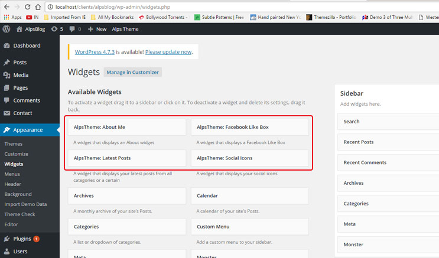
Alpsblog comes with 3 different custom widgets.
AlpsBlog comes with 5 different post formats: Standard, Quote, Video, Gallery and Music Posts. When you're writing a new posts choose what format your post are and insert the necersary info.
You can also tailor the looks of your post by going to Appearance > Customize and under Post Settings you can hide/show different elements on the post page.
You can go to Appearance > Customize > Page Settings and hide/show comments and share buttons.
For contact page we recommend the plugin "Contact Form 7" and have done pre-styling for this plugin. When you create your form use the following mark-up:
<p class="sp_input">Your Name (required) [text* your-name] </p> <p class="sp_input">Your Email (required) [email* your-email] </p> <p class="sp_input">Subject [text your-subject] </p> <p class="sp_message">Your Message [textarea your-message] </p> <p>[submit "Send"]</p>
Alpsblog uses the WordPress Post Thumbnails function. This way, you can upload one image and WordPress will automatically resize it to all of the various thumbnail sizes used throughout the theme. You should always use images with at least 940px width.
To set a post thumbnail for your post, go to Posts > Add New > Set Featured Image
The normal upload box will now appear. Upload your image and click "Use as featured image". Now simply close the box.
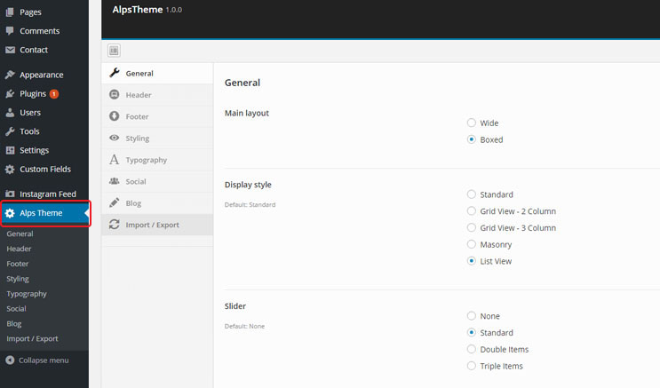
To enter get to the theme options go to Alps Theme > Here you'll be able to modify most part of the theme area.
OR
To enter get to the theme options go to Appearance > Customize. Here you'll be able to hide/show elements, upload your logo, change colors etc. The customizer have the following sections:
We have used the following opensource projects or other files as listed.
We have used the following images for our demo site